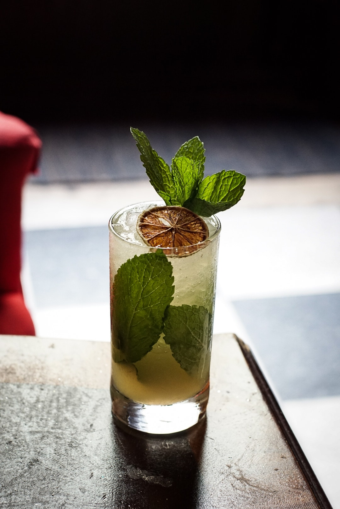

LICORERÍA MIRAMAR
Licorería Miramar es el primer proyecto gastronómico en Puerto Rico y el Caribe dedicado a la investigación y la creación de valores gastronómicos, enfocados en la coctelería.

SERVICIOS
- Prep para barras
- Hielos
- Mercancía de barras
- Consultoría
- Manejo de barra o restaurante

VARIOS CLIENTES
